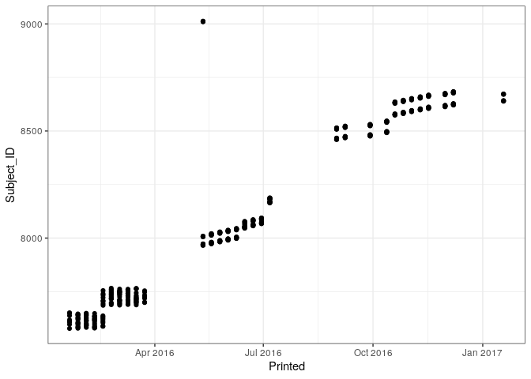
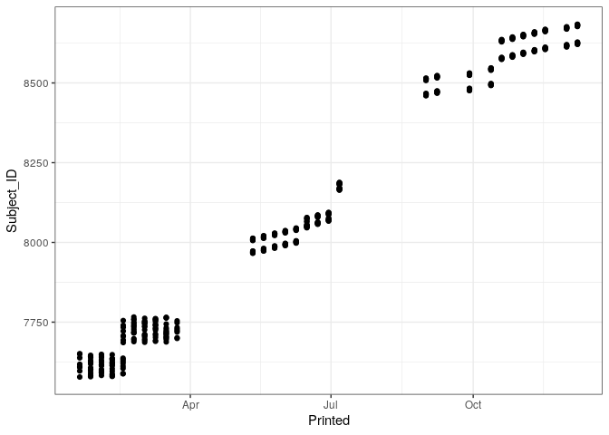

Last updated: 2021-12-06
Checks: 7 0
Knit directory: rta/
This reproducible R Markdown analysis was created with workflowr (version 1.6.2). The Checks tab describes the reproducibility checks that were applied when the results were created. The Past versions tab lists the development history.
Great! Since the R Markdown file has been committed to the Git repository, you know the exact version of the code that produced these results.
Great job! The global environment was empty. Objects defined in the global environment can affect the analysis in your R Markdown file in unknown ways. For reproduciblity it’s best to always run the code in an empty environment.
The command set.seed(20200501) was run prior to running the code in the R Markdown file. Setting a seed ensures that any results that rely on randomness, e.g. subsampling or permutations, are reproducible.
Great job! Recording the operating system, R version, and package versions is critical for reproducibility.
Nice! There were no cached chunks for this analysis, so you can be confident that you successfully produced the results during this run.
Great job! Using relative paths to the files within your workflowr project makes it easier to run your code on other machines.
Great! You are using Git for version control. Tracking code development and connecting the code version to the results is critical for reproducibility.
The results in this page were generated with repository version c3515b3. See the Past versions tab to see a history of the changes made to the R Markdown and HTML files.
Note that you need to be careful to ensure that all relevant files for the analysis have been committed to Git prior to generating the results (you can use wflow_publish or wflow_git_commit). workflowr only checks the R Markdown file, but you know if there are other scripts or data files that it depends on. Below is the status of the Git repository when the results were generated:
Ignored files:
Ignored: .Rproj.user/
Ignored: code/.Rapp.history
Ignored: data/.Rhistory
Ignored: data/RDS/
Ignored: run/
Untracked files:
Untracked: LICENSE
Untracked: Untitled.R
Untracked: analysis/17_mapping_interpretation_old.Rmd
Untracked: analysis/20_predict_acquisition_from_novelty.Rmd
Untracked: analysis/21_DO_elasticnet_correlation.Rmd
Untracked: analysis/Gapdh_msa.tex
Untracked: analysis/Pcdha6_msa.tex
Untracked: analysis/temp.txt
Untracked: code/DO_eQTL_perms.R
Untracked: code/DO_eQTL_score_calc.R
Untracked: code/STAR_RSEM_416.sh
Untracked: code/eQTL_plotting_DO_striatum_416.R
Untracked: code/ggplot_pub_themes.R
Untracked: data/20_elastic_mv_results.csv
Untracked: data/20_elasticnet_predictions.RDS
Untracked: data/DO_416_DGEList.RDS
Untracked: data/DO_416_DGEList_unfiltered (michael.saul@jax.org 2).RDS
Untracked: data/DO_416_DGEList_unfiltered (michael.saul@jax.org 3).RDS
Untracked: data/DO_416_DGEList_unfiltered (michael.saul@jax.org 4).RDS
Untracked: data/DO_416_DGEList_unfiltered (michael.saul@jax.org).RDS
Untracked: data/DO_416_DGEList_unfiltered.RDS
Untracked: data/DO_416_ERCC_DGEList.RDS
Untracked: data/DO_416_ERCC_cpm.RDS
Untracked: data/DO_416_normrt.RDS
Untracked: data/DO_416_pheno.RDS
Untracked: data/DO_416_pheno_allgenes.RDS
Untracked: data/DO_416_voom (michael.saul@jax.org).RDS
Untracked: data/DO_416_voom.RDS
Untracked: data/DO_416_voom_allgenes (michael.saul@jax.org 2).RDS
Untracked: data/DO_416_voom_allgenes (michael.saul@jax.org).RDS
Untracked: data/DO_416_voom_allgenes.RDS
Untracked: data/DO_416_voom_cpresiduals.RDS
Untracked: data/DO_AQ_active_CoV_toptable_annotated.RDS
Untracked: data/DO_AQ_lever_ratio_toptable_annotated.RDS
Untracked: data/DO_AQ_mean_inf_toptable_annotated.RDS
Untracked: data/DO_AQ_rate_toptable_annotated.RDS
Untracked: data/DO_IVSA_acquisition_cancor_df.RDS
Untracked: data/DO_IVSA_acquisition_logit_df.RDS
Untracked: data/DO_IVSA_acquisition_logit_glm.RDS
Untracked: data/DO_IVSA_all_cancor_df.RDS
Untracked: data/DO_IVSA_data.RDS
Untracked: data/DO_IVSA_novelty_cancor_ALL.RDS
Untracked: data/DO_IVSA_novelty_cancor_AQ.RDS
Untracked: data/DO_IVSA_novelty_data.RDS
Untracked: data/DO_IVSA_prediction_ACQUISITION_logit.RDS
Untracked: data/DO_IVSA_prediction_ACQUISITION_logit_2021-01-04.RDS
Untracked: data/DO_IVSA_prediction_ALL_cancor.RDS
Untracked: data/DO_IVSA_prediction_ALL_cancor_2021-01-04.RDS
Untracked: data/DO_IVSA_prediction_ALL_cancor_old.RDS
Untracked: data/DO_IVSA_prediction_AQ_cancor.RDS
Untracked: data/DO_IVSA_prediction_AQ_cancor_2021-01-04.RDS
Untracked: data/DO_IVSA_prediction_a1_ACQUISITION_logit.RDS
Untracked: data/DO_IVSA_prediction_a2_AQ_cancor.RDS
Untracked: data/DO_IVSA_prediction_a3_ALL_cancor.RDS
Untracked: data/DO_IVSA_prediction_a4_male_ALL_cancor.RDS
Untracked: data/DO_IVSA_prediction_a5_female_ALL_cancor.RDS
Untracked: data/DO_IVSA_raw_data.RDS
Untracked: data/DO_IVSA_transformed_data.RDS
Untracked: data/DO_LIMS_data.RDS
Untracked: data/DO_RTG_a1_new.qtl.RData
Untracked: data/DO_RTG_a1_new_1000x.qtlpermu.RData
Untracked: data/DO_RTG_a1_new_mapping_1000x.RData
Untracked: data/DO_RTG_a2_new.qtl.RData
Untracked: data/DO_RTG_a2_new_1000x.qtlpermu.RData
Untracked: data/DO_RTG_a2_new_mapping_1000x.RData
Untracked: data/DO_RTG_a3_new.qtl.RData
Untracked: data/DO_RTG_a3_new_1000x.qtlpermu.RData
Untracked: data/DO_RTG_a3_new_mapping_1000x_01.RData
Untracked: data/DO_RTG_a3_new_mapping_1000x_02.RData
Untracked: data/DO_RTG_a4_new.qtl.RData
Untracked: data/DO_RTG_a5_new.qtl.RData
Untracked: data/DO_RTG_elasticnet_new.qtl.RData
Untracked: data/DO_RTG_elasticnet_new_mapping_1000x.RData
Untracked: data/DO_RTG_project_df_for_mapping.RDS
Untracked: data/DO_RTG_project_df_for_mapping_2020-11-06.RDS
Untracked: data/DO_RTG_project_df_for_mapping_a2.RDS
Untracked: data/DO_RTG_project_df_for_mapping_sexspecific.RDS
Untracked: data/DO_demographic_data_df.RDS
Untracked: data/DO_eigengene_significance.RDS
Untracked: data/DO_eigengenes.RDS
Untracked: data/DO_highcor_cpresiduals_datatable.RDS
Untracked: data/DO_holeboard_data_df.RDS
Untracked: data/DO_holeboard_summarized.RDS
Untracked: data/DO_lightdark_data_df.RDS
Untracked: data/DO_mQTL_peaks.RDS
Untracked: data/DO_mQTL_scan1s.RDS
Untracked: data/DO_module_membership.RDS
Untracked: data/DO_novelplace_data_df.RDS
Untracked: data/DO_novelty_data.RDS
Untracked: data/DO_novelty_response_data.RDS
Untracked: data/DO_novelty_response_data_for_RTG.RDS
Untracked: data/DO_novelty_response_data_with_transform.csv
Untracked: data/DO_openfield_data_df.RDS
Untracked: data/DO_paraclique_data.el
Untracked: data/DO_paraclique_eigengenes.RDS
Untracked: data/DO_paracliques.RDS
Untracked: data/DO_paracliques_significance.RDS
Untracked: data/DO_ploidy_calls.RDS
Untracked: data/DO_pmap.RDS
Untracked: data/DO_pvalue_histograms.RData
Untracked: data/DO_rtg_a1_toptable_annotated.RDS
Untracked: data/DO_rtg_a2_toptable_annotated.RDS
Untracked: data/DO_rtg_a3_toptable_annotated.RDS
Untracked: data/DO_rtg_m1_toptable_annotated.RDS
Untracked: data/DO_rtg_m2_toptable_annotated.RDS
Untracked: data/DO_rtg_m3_toptable_annotated.RDS
Untracked: data/DO_str_2016_eQTL.RData
Untracked: data/DO_str_2016_gm4qtl2.zip
Untracked: data/DO_str_2016_gm4qtl2_intensities.fst
Untracked: data/DO_voom_cpresiduals_NArm.RDS
Untracked: data/DO_wgcna.RDS
Untracked: data/IVSA_RTG_a3_blup.pdf
Untracked: data/IVSA_h2_2019-11-18.tsv
Untracked: data/IVSA_metadata_sheet.RDS
Untracked: data/ME16_edges.tsv
Untracked: data/Mus_musculus.GRCm38.94.parsed.RDS
Untracked: data/Paraclique_19_MF_AMIGO.txt
Untracked: data/RTG_QTL_peaks.RDS
Untracked: data/RTG_figure.RDS
Untracked: data/SENS_RTG/
Untracked: data/Tyr2_genotypes.RDS
Untracked: data/Tyr_genotypes.RDS
Untracked: data/blup_chr7_DO_RTG_a3.RDS
Untracked: data/cc_variants/
Untracked: data/chr18_QTL_results.RDS
Untracked: data/chr4_QTL_results.RDS
Untracked: data/cis/
Untracked: data/eQTL_annotated_peaks.RDS
Untracked: data/eQTL_plots.RData
Untracked: data/figures/
Untracked: data/founders_key/
Untracked: data/gigamuga/
Untracked: data/gwas/
Untracked: data/info/
Untracked: data/m2G.a2.RTG.chr4snp.RData
Untracked: data/mapping_from_hao/
Untracked: data/perms/
Untracked: data/qtl2/
Untracked: data/raw/
Untracked: data/resources/
Untracked: data/tads_loops/
Untracked: data/transcripts/
Untracked: data/variants/
Untracked: logs/
Untracked: new_RTG_a3.jpeg
Untracked: output/RTG_out/
Untracked: output/docs_backup_2020-07-30.tar.gz
Untracked: output/elastic_net_out/
Untracked: singularity/
Untracked: tmp/
Untracked: var/
Unstaged changes:
Deleted: .Rprofile
Modified: .gitignore
Modified: README.md
Modified: analysis/17_mapping_interpretation.Rmd
Modified: analysis/_site.yml
Note that any generated files, e.g. HTML, png, CSS, etc., are not included in this status report because it is ok for generated content to have uncommitted changes.
These are the previous versions of the repository in which changes were made to the R Markdown (analysis/02_DO_holeboard_summarize.Rmd) and HTML (docs/02_DO_holeboard_summarize.html) files. If you’ve configured a remote Git repository (see ?wflow_git_remote), click on the hyperlinks in the table below to view the files as they were in that past version.
| File | Version | Author | Date | Message |
|---|---|---|---|---|
| Rmd | c3515b3 | Michael C. Saul | 2021-12-06 | Recommitting holeboard data with slightly different documentation |
| html | ec3b9f5 | Michael C. Saul | 2021-12-06 | Build site. |
| Rmd | fd62b82 | Michael C. Saul | 2021-12-06 | Recommitting for Sumner |
| html | 2e38c65 | Michael C. Saul | 2020-07-30 | Rolling back to working version. |
| html | 56ca4b6 | Michael C. Saul | 2020-05-01 | All files commit |
| html | 0e1a910 | Michael C. Saul | 2020-05-01 | Build site. |
| Rmd | ef41b9a | Michael C. Saul | 2020-05-01 | Referencing former file name before leading left-justified numbers |
This analysis is to import raw hole board summary files from early data, filter them, and summarize them as data frame.
Calling R libraries necessary for this analysis.
library("readxl")
library("ggplot2")
library("lubridate")
Attaching package: 'lubridate'The following objects are masked from 'package:base':
date, intersect, setdiff, unionlibrary("MASS")Importing basic demographic data.
The md5 checksum of the input file (DO_demographic_data_df.RDS) is: 3dca8fe2a9452557e78d87d839784cfc.
# Reading demographic data
DO_demodata = readRDS("./data/DO_demographic_data_df.RDS")These are the measures used, and they are already summarized as a data frame.
| Measure Name | Measure Description |
|---|---|
Strain |
Mouse strain used in in study |
DOB |
Mouse date of birth |
Sex |
Sex of mouse |
Importing and cleaning up DO hole board data.
# Hole board data have non-uniquely mappable data. Excluding those data.
DO_holeboard_files = list.files(path = "./data/raw/HB_DATA", pattern = "Summary$")
lengths = c()
for (i in 1:length(DO_holeboard_files)) {
file_i = DO_holeboard_files[i]
lines_i = readLines(paste("./data/raw/HB_DATA/",file_i,sep=""))
lengths = c(lengths, length(lines_i))
}
names(lengths) = DO_holeboard_files
table(lengths)lengths
66 69 89 91 92 93 104 158 173 195
5 3 1 5 385 7 65 10 6 1 There are various lengths of the hole board data. Looking at files of particular lengths to get an idea. 92 seems to be the most frequent length. Looking at a 92 length sample.
readLines(paste("./data/raw/HB_DATA/",names(lengths[which(lengths == 92)][1]),sep="")) [1] ""
[2] ""
[3] "Printed : 01/27/2016 10:28:45"
[4] ""
[5] " Activity Summary, 6.02"
[6] " ================"
[7] ""
[8] "Experiment Title : DO holeboard"
[9] "Experiment Comment :"
[10] "Resolution (ms) : 40"
[11] "Box Size : 3"
[12] "Resting Delay (ms) : 1000"
[13] "Ambulatory Trigger : 1"
[14] "Session Type : C"
[15] "Session Time (min) : 20"
[16] "Actual Run Time : 000:20:00.00"
[17] "Data Save Interval (sec) : 300"
[18] "Start on Animal Entry : Yes"
[19] ""
[20] "Raw Filename : 01272016.B0"
[21] "Chamber Number : 1"
[22] "Chamber Type : ENV-515-16"
[23] "Units : Cm"
[24] ""
[25] "Hole Board Installed : Yes"
[26] "Terminate on Task Completion: No"
[27] "Hole Board Strips Installed : Yes"
[28] "Task Holes : 1, 2, 3, 4, 5, 6, 7, 8, 9,"
[29] " 10, 11, 12, 13, 14, 15, 16"
[30] "Session Comment :"
[31] "Subject ID : 7579 "
[32] "Experiment ID : DO 1-27-16 "
[33] "Group ID : 3-1 "
[34] "Session No : 1"
[35] "Data Filename : Subject_7579_Group_3-1_Experiment_DO1-27-16.Summary"
[36] ""
[37] "Start Date : 1/27/2016 "
[38] "Start Time : 10:07:03"
[39] ""
[40] "Detail Reporting Mode : Relative"
[41] ""
[42] "Dist. Time Amb. Time Ster. Time Vert. Vert. Session"
[43] "Trav. Amb. Cnts. Ster. Cnts. Rest. Cnts. Time Time"
[44] "======= ============ ====== ============ ====== ============ ====== ============ ============"
[45] "2568.88 000:02:14.36 1341 000:00:22.44 388 000:01:50.12 0 000:00:00.00 000:05:00.00"
[46] "1863.97 000:01:47.72 1023 000:00:23.32 393 000:02:01.48 0 000:00:00.00 000:10:00.00"
[47] "1377.30 000:01:16.40 687 000:00:24.60 395 000:02:31.88 0 000:00:00.00 000:15:00.00"
[48] "1191.68 000:00:58.16 558 000:00:17.56 283 000:01:45.56 0 000:00:00.00 000:20:00.00"
[49] ""
[50] "Jump Jump Average Ambulatory Session"
[51] "Counts Time Velocity Episodes Time"
[52] "======= ============ ========== ========== ============"
[53] " 113 000:00:33.08 43.13 66 000:05:00.00"
[54] " 137 000:00:46.88 34.75 66 000:10:00.00"
[55] " 107 000:00:47.36 51.86 61 000:15:00.00"
[56] " 64 000:01:59.08 46.53 39 000:20:00.00"
[57] ""
[58] "==================================================================================================================="
[59] ""
[60] "Distance Traveled : 7001.84"
[61] "Time Ambulatory :000:06:16.64"
[62] "Ambulatory Count : 3609"
[63] "Time Stereotypic :000:01:27.92"
[64] "Stereotypic Count : 1459"
[65] "Time Resting :000:08:09.04"
[66] "Vertical Count : 0"
[67] "Time Vertical :000:00:00.00"
[68] "Jump Count : 421"
[69] "Time Jumping :000:04:06.40"
[70] "Average Velocity : 43.61"
[71] "Ambulatory Episodes : 232"
[72] ""
[73] "Total Session Time : 000:20:00.00"
[74] "Task Complete Time : Not Complete"
[75] "Latency To First Hole : N/A"
[76] "Novel Task Entries : 0"
[77] "Novel NonTask Entries : 0"
[78] "Novel Entries : 0"
[79] ""
[80] "Repeat Task Entries : 0"
[81] "Repeat NonTask Entries: 0"
[82] "Repeat Entries : 0"
[83] ""
[84] "Total Entries : 0"
[85] ""
[86] "Avg. Novel Task IRT : 0.00"
[87] "Avg. Novel NonTask IRT: 0.00"
[88] "Avg. Novel Total IRT : 0.00"
[89] ""
[90] "Working Memory Ratio : 0.00"
[91] "Reference Memory Ratio: 0.00"
[92] "" The 92 line files appear to have everything in them. Looking at the 195 line file.
readLines(paste("./data/raw/HB_DATA/",names(lengths[which(lengths == 195)][1]),sep="")) [1] ""
[2] ""
[3] "Printed : 01/20/2016 09:32:37"
[4] ""
[5] " Activity Summary, 6.02"
[6] " ================"
[7] ""
[8] "Experiment Title : DO Group2"
[9] ""
[10] "********** Experiment Aborted **********"
[11] ""
[12] "Experiment Comment :"
[13] "Resolution (ms) : 40"
[14] "Box Size : 4"
[15] "Resting Delay (ms) : 1200"
[16] "Ambulatory Trigger : 3"
[17] "Session Type : C"
[18] "Session Time (min) : 20"
[19] "Actual Run Time : 000:02:54.32"
[20] "Data Save Interval (sec) : 120"
[21] "Start on Animal Entry : Yes"
[22] ""
[23] "Raw Filename : 01202016.I0"
[24] "Chamber Number : 8"
[25] "Chamber Type : ENV-515-16"
[26] "Units : Cm"
[27] ""
[28] "Hole Board Installed : Yes"
[29] "Terminate on Task Completion: No"
[30] "Hole Board Strips Installed : Yes"
[31] "Task Holes : "
[32] ""
[33] "Session Comment :"
[34] "Subject ID : 7610 "
[35] "Experiment ID : DO 1-20-16 "
[36] "Group ID : 2 "
[37] "Session No : 1"
[38] "Data Filename : Subject_7610_Group_2_Experiment_DO1-20-16.Summary"
[39] ""
[40] "Start Date : 1/20/2016 "
[41] "Start Time : 09:27:30"
[42] ""
[43] "Detail Reporting Mode : Relative"
[44] ""
[45] "Dist. Time Amb. Time Ster. Time Vert. Vert. Session"
[46] "Trav. Amb. Cnts. Ster. Cnts. Rest. Cnts. Time Time"
[47] "======= ============ ====== ============ ====== ============ ====== ============ ============"
[48] " 0.00 000:00:00.00 0 000:00:00.36 4 000:00:00.84 0 000:00:00.00 000:02:00.00"
[49] " 0.00 000:00:00.00 0 000:00:00.00 0 000:00:00.00 0 000:00:00.00 000:02:54.32"
[50] ""
[51] "Jump Jump Average Ambulatory Session"
[52] "Counts Time Velocity Episodes Time"
[53] "======= ============ ========== ========== ============"
[54] " 1 000:01:58.80 0.00 0 000:02:00.00"
[55] " 0 000:00:54.32 0.00 0 000:02:54.32"
[56] ""
[57] "==================================================================================================================="
[58] ""
[59] "Distance Traveled : 0.00"
[60] "Time Ambulatory :000:00:00.00"
[61] "Ambulatory Count : 0"
[62] "Time Stereotypic :000:00:00.36"
[63] "Stereotypic Count : 4"
[64] "Time Resting :000:00:00.84"
[65] "Vertical Count : 0"
[66] "Time Vertical :000:00:00.00"
[67] "Jump Count : 1"
[68] "Time Jumping :000:02:53.12"
[69] "Average Velocity : 0.00"
[70] "Ambulatory Episodes : 0"
[71] ""
[72] "Total Session Time : 000:02:54.32"
[73] "Task Complete Time : Not Complete"
[74] "Latency To First Hole : N/A"
[75] "Novel Task Entries : 0"
[76] "Novel NonTask Entries : 0"
[77] "Novel Entries : 0"
[78] ""
[79] "Repeat Task Entries : 0"
[80] "Repeat NonTask Entries: 0"
[81] "Repeat Entries : 0"
[82] ""
[83] "Total Entries : 0"
[84] ""
[85] "Avg. Novel Task IRT : 0.00"
[86] "Avg. Novel NonTask IRT: 0.00"
[87] "Avg. Novel Total IRT : 0.00"
[88] ""
[89] "Working Memory Ratio : 0.00"
[90] "Reference Memory Ratio: 0.00"
[91] ""
[92] ""
[93] ""
[94] "Printed : 01/20/2016 09:56:02"
[95] ""
[96] " Activity Summary, 6.02"
[97] " ================"
[98] ""
[99] "Experiment Title : DO Group2"
[100] "Experiment Comment :"
[101] "Resolution (ms) : 40"
[102] "Box Size : 4"
[103] "Resting Delay (ms) : 1200"
[104] "Ambulatory Trigger : 3"
[105] "Session Type : C"
[106] "Session Time (min) : 20"
[107] "Actual Run Time : 000:20:00.00"
[108] "Data Save Interval (sec) : 120"
[109] "Start on Animal Entry : Yes"
[110] ""
[111] "Raw Filename : 01202016.Q0"
[112] "Chamber Number : 8"
[113] "Chamber Type : ENV-515-16"
[114] "Units : Cm"
[115] ""
[116] "Hole Board Installed : Yes"
[117] "Terminate on Task Completion: No"
[118] "Hole Board Strips Installed : Yes"
[119] "Task Holes : "
[120] ""
[121] "Session Comment :"
[122] "Subject ID : 7610 "
[123] "Experiment ID : DO 1-20-16 "
[124] "Group ID : 2 "
[125] "Session No : 2"
[126] "Data Filename : Subject_7610_Group_2_Experiment_DO1-20-16.Summary"
[127] ""
[128] "Start Date : 1/20/2016 "
[129] "Start Time : 09:35:23"
[130] ""
[131] "Detail Reporting Mode : Relative"
[132] ""
[133] "Dist. Time Amb. Time Ster. Time Vert. Vert. Session"
[134] "Trav. Amb. Cnts. Ster. Cnts. Rest. Cnts. Time Time"
[135] "======= ============ ====== ============ ====== ============ ====== ============ ============"
[136] "1118.01 000:00:46.96 516 000:00:16.44 271 000:00:55.36 0 000:00:00.00 000:02:00.00"
[137] " 619.24 000:00:29.76 259 000:00:18.84 323 000:01:07.60 0 000:00:00.00 000:04:00.00"
[138] " 475.87 000:00:20.60 195 000:00:19.60 326 000:01:15.92 0 000:00:00.00 000:06:00.00"
[139] " 481.15 000:00:23.36 225 000:00:18.12 306 000:01:12.92 0 000:00:00.00 000:08:00.00"
[140] " 462.14 000:00:21.04 177 000:00:19.32 337 000:01:14.40 0 000:00:00.00 000:10:00.00"
[141] " 383.72 000:00:16.68 133 000:00:21.88 367 000:01:20.28 0 000:00:00.00 000:12:00.00"
[142] " 495.92 000:00:21.56 216 000:00:17.36 300 000:01:16.20 0 000:00:00.00 000:14:00.00"
[143] " 446.37 000:00:16.64 175 000:00:17.88 314 000:01:18.04 0 000:00:00.00 000:16:00.00"
[144] " 456.65 000:00:18.88 175 000:00:13.32 223 000:01:24.08 0 000:00:00.00 000:18:00.00"
[145] " 486.82 000:00:18.44 181 000:00:15.76 253 000:01:24.40 0 000:00:00.00 000:20:00.00"
[146] ""
[147] "Jump Jump Average Ambulatory Session"
[148] "Counts Time Velocity Episodes Time"
[149] "======= ============ ========== ========== ============"
[150] " 8 000:00:01.24 35.24 24 000:02:00.00"
[151] " 14 000:00:03.80 38.67 23 000:04:00.00"
[152] " 7 000:00:03.32 35.42 18 000:06:00.00"
[153] " 18 000:00:05.52 39.41 20 000:08:00.00"
[154] " 29 000:00:05.88 23.94 17 000:10:00.00"
[155] " 9 000:00:01.16 19.75 13 000:12:00.00"
[156] " 13 000:00:04.88 43.22 18 000:14:00.00"
[157] " 23 000:00:06.64 45.40 12 000:16:00.00"
[158] " 14 000:00:03.80 27.33 18 000:18:00.00"
[159] " 9 000:00:02.12 27.31 15 000:20:00.00"
[160] ""
[161] "==================================================================================================================="
[162] ""
[163] "Distance Traveled : 5425.88"
[164] "Time Ambulatory :000:03:53.92"
[165] "Ambulatory Count : 2252"
[166] "Time Stereotypic :000:02:58.52"
[167] "Stereotypic Count : 3020"
[168] "Time Resting :000:12:29.20"
[169] "Vertical Count : 0"
[170] "Time Vertical :000:00:00.00"
[171] "Jump Count : 144"
[172] "Time Jumping :000:00:38.36"
[173] "Average Velocity : 33.98"
[174] "Ambulatory Episodes : 178"
[175] ""
[176] "Total Session Time : 000:20:00.00"
[177] "Task Complete Time : 000:00:20.76"
[178] "Latency To First Hole : 000:00:20.68"
[179] "Novel Task Entries : 0"
[180] "Novel NonTask Entries : 16"
[181] "Novel Entries : 16"
[182] ""
[183] "Repeat Task Entries : 0"
[184] "Repeat NonTask Entries: 112"
[185] "Repeat Entries : 112"
[186] ""
[187] "Total Entries : 128"
[188] ""
[189] "Avg. Novel Task IRT : 0.00"
[190] "Avg. Novel NonTask IRT: 28.48"
[191] "Avg. Novel Total IRT : 28.48"
[192] ""
[193] "Working Memory Ratio : 0.00"
[194] "Reference Memory Ratio: 0.00"
[195] "" The 195 line file has two trials in it, one of which isn’t full length. Looking at a 66 line file.
readLines(paste("./data/raw/HB_DATA/",names(lengths[which(lengths == 66)][1]),sep="")) [1] ""
[2] ""
[3] "Printed : 10/26/2016 09:22:38"
[4] ""
[5] " Activity Summary, 6.02"
[6] " ================"
[7] ""
[8] "Experiment Title : Holeboard"
[9] "Experiment Comment :"
[10] "Resolution (ms) : 40"
[11] "Box Size : 3"
[12] "Resting Delay (ms) : 1000"
[13] "Ambulatory Trigger : 1"
[14] "Session Type : C"
[15] "Session Time (min) : 20"
[16] "Actual Run Time : 000:00:09.12"
[17] "Data Save Interval (sec) : 300"
[18] "Start on Animal Entry : Yes"
[19] ""
[20] "Raw Filename : 10262016.S0"
[21] "Chamber Number : 2"
[22] "Chamber Type : ENV-515-16"
[23] "Units : Cm"
[24] ""
[25] "Hole Board Installed : Yes"
[26] "Terminate on Task Completion: No"
[27] "Hole Board Strips Installed : Yes"
[28] "Task Holes : 1, 2, 3, 4, 5, 6, 7, 8, 9,"
[29] " 10, 11, 12, 13, 14, 15, 16"
[30] "Session Comment :"
[31] "Subject ID : 8585 "
[32] "Experiment ID : DO 10-26-16 "
[33] "Group ID : "
[34] "Session No : 2"
[35] "Data Filename : Subject_8585_Group__Experiment_DO10-26-16.Summary"
[36] ""
[37] "Start Date : 10/26/2016"
[38] "Start Time : 09:22:27"
[39] ""
[40] "Detail Reporting Mode : Relative"
[41] ""
[42] "Dist. Time Amb. Time Ster. Time Vert. Vert. Session"
[43] "Trav. Amb. Cnts. Ster. Cnts. Rest. Cnts. Time Time"
[44] "======= ============ ====== ============ ====== ============ ====== ============ ============"
[45] "No Block information found."
[46] ""
[47] "Total Session Time : 000:00:09.12"
[48] "Task Complete Time : Not Complete"
[49] "Latency To First Hole : N/A"
[50] "Novel Task Entries : 0"
[51] "Novel NonTask Entries : 0"
[52] "Novel Entries : 0"
[53] ""
[54] "Repeat Task Entries : 0"
[55] "Repeat NonTask Entries: 0"
[56] "Repeat Entries : 0"
[57] ""
[58] "Total Entries : 0"
[59] ""
[60] "Avg. Novel Task IRT : 0.00"
[61] "Avg. Novel NonTask IRT: 0.00"
[62] "Avg. Novel Total IRT : 0.00"
[63] ""
[64] "Working Memory Ratio : 0.00"
[65] "Reference Memory Ratio: 0.00"
[66] "" Again, the file appears to be an incomplete trial. Trials appear to be distinguished by a line that is prefixed by the word Printed : and then the date and time of printing. Each trial ends with the Reference Memory Ratio: line. From speaking with Leona, Troy, and Tyler, I have found out that there were often aborted trials and that the only trials that matter were a full 20 minutes long.
The full trials can therefore be pulled out of the data by using the Actual Run Time : line and finding which ones are 20 minutes long. Using this information to extract a line for each trial. Variables to extract include the following:
Getting a list of the variables in a 92 line file by extracting what comes before colons.
linelength_92_file = readLines(paste("./data/raw/HB_DATA/",names(lengths[which(lengths == 92)][1]),sep=""))
linelength_92_file[grep("^.*:", linelength_92_file)] [1] "Printed : 01/27/2016 10:28:45"
[2] "Experiment Title : DO holeboard"
[3] "Experiment Comment :"
[4] "Resolution (ms) : 40"
[5] "Box Size : 3"
[6] "Resting Delay (ms) : 1000"
[7] "Ambulatory Trigger : 1"
[8] "Session Type : C"
[9] "Session Time (min) : 20"
[10] "Actual Run Time : 000:20:00.00"
[11] "Data Save Interval (sec) : 300"
[12] "Start on Animal Entry : Yes"
[13] "Raw Filename : 01272016.B0"
[14] "Chamber Number : 1"
[15] "Chamber Type : ENV-515-16"
[16] "Units : Cm"
[17] "Hole Board Installed : Yes"
[18] "Terminate on Task Completion: No"
[19] "Hole Board Strips Installed : Yes"
[20] "Task Holes : 1, 2, 3, 4, 5, 6, 7, 8, 9,"
[21] "Session Comment :"
[22] "Subject ID : 7579 "
[23] "Experiment ID : DO 1-27-16 "
[24] "Group ID : 3-1 "
[25] "Session No : 1"
[26] "Data Filename : Subject_7579_Group_3-1_Experiment_DO1-27-16.Summary"
[27] "Start Date : 1/27/2016 "
[28] "Start Time : 10:07:03"
[29] "Detail Reporting Mode : Relative"
[30] "2568.88 000:02:14.36 1341 000:00:22.44 388 000:01:50.12 0 000:00:00.00 000:05:00.00"
[31] "1863.97 000:01:47.72 1023 000:00:23.32 393 000:02:01.48 0 000:00:00.00 000:10:00.00"
[32] "1377.30 000:01:16.40 687 000:00:24.60 395 000:02:31.88 0 000:00:00.00 000:15:00.00"
[33] "1191.68 000:00:58.16 558 000:00:17.56 283 000:01:45.56 0 000:00:00.00 000:20:00.00"
[34] " 113 000:00:33.08 43.13 66 000:05:00.00"
[35] " 137 000:00:46.88 34.75 66 000:10:00.00"
[36] " 107 000:00:47.36 51.86 61 000:15:00.00"
[37] " 64 000:01:59.08 46.53 39 000:20:00.00"
[38] "Distance Traveled : 7001.84"
[39] "Time Ambulatory :000:06:16.64"
[40] "Ambulatory Count : 3609"
[41] "Time Stereotypic :000:01:27.92"
[42] "Stereotypic Count : 1459"
[43] "Time Resting :000:08:09.04"
[44] "Vertical Count : 0"
[45] "Time Vertical :000:00:00.00"
[46] "Jump Count : 421"
[47] "Time Jumping :000:04:06.40"
[48] "Average Velocity : 43.61"
[49] "Ambulatory Episodes : 232"
[50] "Total Session Time : 000:20:00.00"
[51] "Task Complete Time : Not Complete"
[52] "Latency To First Hole : N/A"
[53] "Novel Task Entries : 0"
[54] "Novel NonTask Entries : 0"
[55] "Novel Entries : 0"
[56] "Repeat Task Entries : 0"
[57] "Repeat NonTask Entries: 0"
[58] "Repeat Entries : 0"
[59] "Total Entries : 0"
[60] "Avg. Novel Task IRT : 0.00"
[61] "Avg. Novel NonTask IRT: 0.00"
[62] "Avg. Novel Total IRT : 0.00"
[63] "Working Memory Ratio : 0.00"
[64] "Reference Memory Ratio: 0.00" Adding in variables for each of these into a data frame.
field_grep = c("^Printed :",
"^Experiment Title :",
"^Experiment Comment :",
"^Resolution \\(ms\\) :",
"^Box Size :",
"^Resting Delay \\(ms\\) :",
"^Ambulatory Trigger :",
"^Session Type :",
"^Session Time \\(min\\) :",
"^Actual Run Time :",
"^Data Save Interval \\(sec\\) :",
"^Start on Animal Entry :",
"^Raw Filename :",
"^Chamber Number :",
"^Chamber Type :",
"^Units :",
"^Hole Board Installed :",
"^Terminate on Task Completion:",
"^Hole Board Strips Installed :",
"^Task Holes :",
"^Session Comment :",
"^Subject ID :",
"^Experiment ID :",
"^Group ID :",
"^Session No :",
"^Data Filename :",
"^Start Date :",
"^Start Time :",
"^Detail Reporting Mode :",
"^Distance Traveled :",
"^Time Ambulatory :",
"^Ambulatory Count :",
"^Time Stereotypic :",
"^Stereotypic Count :",
"^Time Resting :",
"^Vertical Count :",
"^Time Vertical :",
"^Jump Count :",
"^Time Jumping :",
"^Average Velocity :",
"^Ambulatory Episodes :",
"^Total Session Time :",
"^Task Complete Time :",
"^Latency To First Hole :",
"^Novel Task Entries :",
"^Novel NonTask Entries :",
"^Novel Entries :",
"^Repeat Task Entries :",
"^Repeat NonTask Entries:",
"^Repeat Entries :",
"^Total Entries :",
"^Avg\\. Novel Task IRT :",
"^Avg\\. Novel NonTask IRT:",
"^Avg\\. Novel Total IRT :",
"^Working Memory Ratio :",
"^Reference Memory Ratio:")
field_id = c("Printed",
"Experiment_Title",
"Experiment_Comment",
"Resolution_ms",
"Box_Size",
"Resting_Delay_ms",
"Ambulatory_Trigger",
"Session_Type",
"Session_Time_min",
"Actual_Run_Time",
"Data_Save_Interval_sec",
"Start_on_Animal_Entry",
"Raw_Filename",
"Chamber_Number",
"Chamber_Type",
"Units",
"Hole_Board_Installed",
"Terminate_on_Task_Completion",
"Hole_Board_Strips_Installed",
"Task_Holes",
"Session_Comment",
"Subject_ID",
"Experiment_ID",
"Group_ID",
"Session_No",
"Data_Filename",
"Start_Date",
"Start_Time",
"Detail_Reporting_Mode",
"Distance_Traveled",
"Time_Ambulatory",
"Ambulatory_Count",
"Time_Stereotypic",
"Stereotypic_Count",
"Time_Resting",
"Vertical_Count",
"Time_Vertical",
"Jump_Count",
"Time_Jumping",
"Average_Velocity",
"Ambulatory_Episodes",
"Total_Session_Time",
"Task_Complete_Time",
"Latency_To_First_Hole",
"Novel_Task_Entries",
"Novel_NonTask_Entries",
"Novel_Entries",
"Repeat_Task_Entries",
"Repeat_NonTask_Entries",
"Repeat_Entries",
"Total_Entries",
"Avg_Novel_Task_IRT",
"Avg_Novel_NonTask_IRT",
"Avg_Novel_Total_IRT",
"Working_Memory_Ratio",
"Reference_Memory_Ratio")
field_type = c("mdy_hms",
"character",
"character",
"integer",
"integer",
"integer",
"integer",
"character",
"integer",
"hhh:mm:ss:ff",
"integer",
"character_to_boolean",
"character",
"integer",
"character",
"character",
"character_to_boolean",
"character_to_boolean",
"character_to_boolean",
"character",
"character",
"character",
"character",
"character",
"integer",
"character",
"character",
"character",
"character",
"float",
"hhh:mm:ss:ff",
"integer",
"hhh:mm:ss:ff",
"integer",
"hhh:mm:ss:ff",
"integer",
"hhh:mm:ss:ff",
"integer",
"hhh:mm:ss:ff",
"float",
"integer",
"hhh:mm:ss:ff",
"hhh:mm:ss:ff",
"hhh:mm:ss:ff",
"integer",
"integer",
"integer",
"integer",
"integer",
"integer",
"integer",
"float",
"float",
"float",
"float",
"float")
holeboard_fields = data.frame(FieldID = field_id, FieldGREP = field_grep, FieldType = field_type, stringsAsFactors = FALSE)Parsing files.
holeboard_trials = as.data.frame(matrix(nrow = 0, ncol = nrow(holeboard_fields)), stringsAsFactors = FALSE)
colnames(holeboard_trials) = holeboard_fields$FieldID
file_trial = as.data.frame(matrix(nrow = 0, ncol = 2), stringsAsFactors = FALSE)
colnames(file_trial) = c("file_name","trial_id")
holeboard_trials = cbind(file_trial, holeboard_trials)
holeboard_trial_blank = holeboard_trials
holeboard_trial_blank[1,] = rep("", times = ncol(holeboard_trial_blank))
for (i in 1:length(DO_holeboard_files)) {
file_i = DO_holeboard_files[i]
lines_i = readLines(paste("./data/raw/HB_DATA/",file_i,sep=""))
trial_starts_i = grep("^Printed :", lines_i)
trial_stops_i = grep("^Reference Memory Ratio:", lines_i)
for (j in 1:length(trial_starts_i)) {
holeboard_trial_j = holeboard_trial_blank
holeboard_trial_j[1,"file_name"] = file_i
holeboard_trial_j[1,"trial_id"] = j
lines_j = lines_i[seq(from = trial_starts_i[j], to = trial_stops_i[j], by = 1)]
for (k in 1:nrow(holeboard_fields)) {
field_k = holeboard_fields[k,"FieldID"]
grep_k = holeboard_fields[k,"FieldGREP"]
line_k = lines_j[grep(grep_k, lines_j)]
line_k = ifelse(length(line_k) != 0, gsub(grep_k,"",line_k), NA)
line_k = ifelse(!(is.na(line_k)), trimws(line_k), NA)
holeboard_trial_j[1,field_k] = line_k
}
holeboard_trials = rbind(holeboard_trials, holeboard_trial_j)
}
}
saveRDS(holeboard_trials,"./data/raw/HB_DATA/holeboard_trials_raw.RDS",compress="xz")The md5 checksum of the output file (holeboard_trials_raw.RDS) is: NA.
Filtering by the complete trials and beginning re-typing fields to proper types.
holeboard_complete = holeboard_trials[which(holeboard_trials$Total_Session_Time == "000:20:00.00"),]
holeboard_complete$trial_id = as.integer(holeboard_complete$trial_id)
for (i in 1:nrow(holeboard_fields)) {
field_i = holeboard_fields[i,"FieldID"]
type_i = holeboard_fields[i,"FieldType"]
column_i = which(colnames(holeboard_complete) == field_i)
if (type_i == "integer") {
holeboard_complete[,column_i] = as.integer(holeboard_complete[,column_i])
} else if (type_i == "float") {
holeboard_complete[,column_i] = as.numeric(holeboard_complete[,column_i])
} else if (type_i == "hhh:mm:ss:ff") {
hours_i = as.numeric(gsub("^(\\d{3}):(\\d{2}):(\\d{2})\\.(\\d{+})$","\\1",holeboard_complete[,column_i]))
minutes_i = as.numeric(gsub("^(\\d{3}):(\\d{2}):(\\d{2})\\.(\\d{+})$","\\2",holeboard_complete[,column_i]))
seconds_i = as.numeric(gsub("^(\\d{3}):(\\d{2}):(\\d{2})\\.(\\d{+})$","\\3",holeboard_complete[,column_i]))
milliseconds_i = as.numeric(paste("0.",gsub("^(\\d{3}):(\\d{2}):(\\d{2})\\.(\\d{+})$","\\4",holeboard_complete[,column_i]),sep=""))
holeboard_complete[,column_i] = (hours_i * 3600) + (minutes_i * 60) + seconds_i + milliseconds_i
} else if (type_i == "character_to_boolean") {
holeboard_complete[,column_i] = holeboard_complete[,column_i] == "Yes"
} else if (type_i == "mdy_hms") {
holeboard_complete[,column_i] = mdy_hms(holeboard_complete[,column_i], tz = "America/New_York")
} else if (type_i == "mdy") {
holeboard_complete[,column_i] = mdy(holeboard_complete[,column_i])
} else {
holeboard_complete[,column_i] = as.character(holeboard_complete[,column_i])
}
}Warning: NAs introduced by coercion
Warning: NAs introduced by coercion
Warning: NAs introduced by coercion
Warning: NAs introduced by coercion
Warning: NAs introduced by coercion
Warning: NAs introduced by coercion
Warning: NAs introduced by coercion
Warning: NAs introduced by coercionfields_seconds = holeboard_fields[which(holeboard_fields$FieldType == "hhh:mm:ss:ff"),"FieldID"]
fields_seconds = which(colnames(holeboard_complete) %in% fields_seconds)
colnames(holeboard_complete)[fields_seconds] = paste(colnames(holeboard_complete)[fields_seconds],"_sec",sep="")Re-typing Start_Time to a date and dropping Start_Date
holeboard_complete$Start_Time = mdy_hms(paste(holeboard_complete$Start_Date, holeboard_complete$Start_Time, sep = ""), tz = "America/New_York")
holeboard_complete = holeboard_complete[,(-1 * which(colnames(holeboard_complete) == "Start_Date"))]Changing NA values of Task_Complete_Time_sec and Latency_To_First_Hole_sec to the maximum possible time of 20 minutes (1200.0 seconds) to keep them continuous variables
holeboard_complete[which(is.na(holeboard_complete$Task_Complete_Time_sec)),"Task_Complete_Time_sec"] = 1200.0
holeboard_complete[which(is.na(holeboard_complete$Latency_To_First_Hole_sec)),"Latency_To_First_Hole_sec"] = 1200.0It should be noted that Task_Complete_Time_sec and all task-related columns appear to be meaningless at the moment. The task appears to be related to whether holes were baited or not (see column Task_Holes).
Identifying duplicated subject ID data and attempting to resolve duplicates.
holeboard_complete_duplicate_subject_IDs = holeboard_complete[duplicated(holeboard_complete$Subject_ID),"Subject_ID"]
holeboard_complete_duplicate_subjects = holeboard_complete[which(holeboard_complete$Subject_ID %in% holeboard_complete_duplicate_subject_IDs),]
holeboard_complete_duplicate_subjects[order(holeboard_complete_duplicate_subjects$Subject_ID),]Some of these subjects appear to have duplicated holeboard sessions on the same day. Others appear to have file names with subject IDs (and file IDs reported in the file too) mismatching the subject ID in the trial. These are potentially problematic. Looking at how many mismatches between file name subject IDs and summary subject IDs there are.
paste("There are ", length(which(gsub("^Subject_(\\d+)_.*$","\\1",holeboard_complete$file_name) != holeboard_complete$Subject_ID)), " subjects with file IDs mismatching their holeboard subject IDs", sep = "")[1] "There are 3 subjects with file IDs mismatching their holeboard subject IDs"This is not a major problem. Looking at these IDs.
mismatch_IDs = unique(holeboard_complete[which(gsub("^Subject_(\\d+)_.*$","\\1",holeboard_complete$file_name) != holeboard_complete$Subject_ID),"Subject_ID"])
holeboard_complete[which(holeboard_complete$Subject_ID %in% mismatch_IDs),]8597 is most likely a miskey given the proximety to 8627. The others appear to be similar miskeys. For these mismatch IDs, can gsub in the subject ID from the file name.
mismatch_rows = which(holeboard_complete$Subject_ID %in% mismatch_IDs)
holeboard_complete[mismatch_rows,"Subject_ID"] = gsub("^Subject_(\\d+)_.*$","\\1",holeboard_complete[mismatch_rows,"file_name"])
length(which(duplicated(holeboard_complete$Subject_ID)))[1] 8This resolved two duplicates and all mismatches.
Looking for obvious miskeys in subject IDs relative to date tested.
holeboard_complete_continuous_id = holeboard_complete
holeboard_complete_continuous_id$Subject_ID = as.numeric(holeboard_complete_continuous_id$Subject_ID)
holeboard_complete_continuous_id = holeboard_complete_continuous_id[which(holeboard_complete_continuous_id$Subject_ID > 1000),]
ggplot(data = holeboard_complete_continuous_id, aes(x = Printed, y = Subject_ID)) +
geom_point() +
theme_bw()
| Version | Author | Date |
|---|---|---|
| ec3b9f5 | Michael C. Saul | 2021-12-06 |
| 2e38c65 | Michael C. Saul | 2020-07-30 |
| 56ca4b6 | Michael C. Saul | 2020-05-01 |
| 0e1a910 | Michael C. Saul | 2020-05-01 |
The January 2017 datapoints are very obviously outside of the cloud of animals tested in the G23. Since these are mostly duplicates, can resolve these by filtering the January 2017 datapoints.
exclude_files = holeboard_complete[which(holeboard_complete$Printed > ymd("2017-01-01")),"file_name"]
exclude_rows = which(holeboard_complete$file_name %in% exclude_files)
holeboard_complete = holeboard_complete[(-1 * exclude_rows),]We have additional problems in January of 2016 and ~May of 2016 that have highly different subject IDs to their cohort. These should be resolved too. This can be done with studentized residuals.
holeboard_subject_id_lm = lm(Subject_ID ~ Printed, data = holeboard_complete_continuous_id)
holeboard_subject_id_studres = studres(holeboard_subject_id_lm)
sig_subject_ids = which(2 * pnorm(abs(holeboard_subject_id_studres), lower.tail = FALSE) < 0.01)
holeboard_complete_continuous_id[sig_subject_ids,c("Printed","Subject_ID")]Most likely, these are a 9 transposed where an 8 should be. Changing these IDs to 8000s.
holeboard_complete_9000_rows = which(as.numeric(holeboard_complete$Subject_ID) > 9000)
holeboard_complete[holeboard_complete_9000_rows,"Subject_ID"] = as.character(as.numeric(holeboard_complete[holeboard_complete_9000_rows,"Subject_ID"]) - 1000)
holeboard_complete_continuous_id = holeboard_complete
holeboard_complete_continuous_id$Subject_ID = as.numeric(holeboard_complete_continuous_id$Subject_ID)
holeboard_complete_continuous_id = holeboard_complete_continuous_id[which(holeboard_complete_continuous_id$Subject_ID > 1000),]
ggplot(data = holeboard_complete_continuous_id, aes(x = Printed, y = Subject_ID)) +
geom_point() +
theme_bw()
| Version | Author | Date |
|---|---|---|
| ec3b9f5 | Michael C. Saul | 2021-12-06 |
| 2e38c65 | Michael C. Saul | 2020-07-30 |
| 56ca4b6 | Michael C. Saul | 2020-05-01 |
| 0e1a910 | Michael C. Saul | 2020-05-01 |
This looks much cleaner. Looking for duplicated subject IDs.
final_dup_ids = holeboard_complete[which(duplicated(holeboard_complete$Subject_ID)),"Subject_ID"]
holeboard_complete[which(holeboard_complete$Subject_ID %in% final_dup_ids),]These IDs cannot be resolved and should be excluded.
holeboard_complete = holeboard_complete[(-1 * which(holeboard_complete$Subject_ID %in% final_dup_ids)),]
nrow(holeboard_complete) == length(unique(holeboard_complete$Subject_ID))[1] TRUEThis phenotype data is as clean as possible for the hole board data. Saving the complete and unique hole board dataset for downstream use.
row.names(holeboard_complete) = holeboard_complete$Subject_ID
saveRDS(holeboard_complete, file = "./data/DO_holeboard_summarized.RDS", compress = "xz")The md5 checksum of the output file (DO_holeboard_summarized.RDS) is: 21bc380683f1cf5ddefbdb0088cb8ca5.
This document was prepared using RMarkdown in RStudio and imported into workflowr on 2020-05-01.
(file was formerly saved as DO_holeboard_summarize.html)
sessionInfo()R version 4.1.2 (2021-11-01)
Platform: x86_64-pc-linux-gnu (64-bit)
Running under: Ubuntu 20.04.3 LTS
Matrix products: default
BLAS/LAPACK: /usr/lib/x86_64-linux-gnu/openblas-pthread/libopenblasp-r0.3.8.so
locale:
[1] LC_CTYPE=en_US.UTF-8 LC_NUMERIC=C
[3] LC_TIME=en_US.UTF-8 LC_COLLATE=en_US.UTF-8
[5] LC_MONETARY=en_US.UTF-8 LC_MESSAGES=C
[7] LC_PAPER=en_US.UTF-8 LC_NAME=C
[9] LC_ADDRESS=C LC_TELEPHONE=C
[11] LC_MEASUREMENT=en_US.UTF-8 LC_IDENTIFICATION=C
attached base packages:
[1] stats graphics grDevices utils datasets methods base
other attached packages:
[1] MASS_7.3-54 lubridate_1.7.10 ggplot2_3.3.3 readxl_1.3.1
loaded via a namespace (and not attached):
[1] Rcpp_1.0.6 highr_0.8 pillar_1.5.1 bslib_0.2.4
[5] compiler_4.1.2 cellranger_1.1.0 later_1.1.0.1 jquerylib_0.1.3
[9] git2r_0.28.0 workflowr_1.6.2 tools_4.1.2 digest_0.6.27
[13] jsonlite_1.7.2 evaluate_0.14 lifecycle_1.0.0 tibble_3.0.6
[17] gtable_0.3.0 pkgconfig_2.0.3 rlang_0.4.10 DBI_1.1.1
[21] yaml_2.2.1 xfun_0.21 withr_2.4.1 dplyr_1.0.4
[25] stringr_1.4.0 knitr_1.31 generics_0.1.0 fs_1.5.0
[29] vctrs_0.3.6 sass_0.3.1 tidyselect_1.1.0 rprojroot_2.0.2
[33] grid_4.1.2 glue_1.4.2 R6_2.5.0 fansi_0.4.2
[37] rmarkdown_2.7 farver_2.1.0 purrr_0.3.4 magrittr_2.0.1
[41] whisker_0.4 scales_1.1.1 promises_1.2.0.1 ellipsis_0.3.1
[45] htmltools_0.5.1.1 assertthat_0.2.1 colorspace_2.0-0 httpuv_1.5.5
[49] labeling_0.4.2 utf8_1.1.4 stringi_1.5.3 munsell_0.5.0
[53] crayon_1.4.1